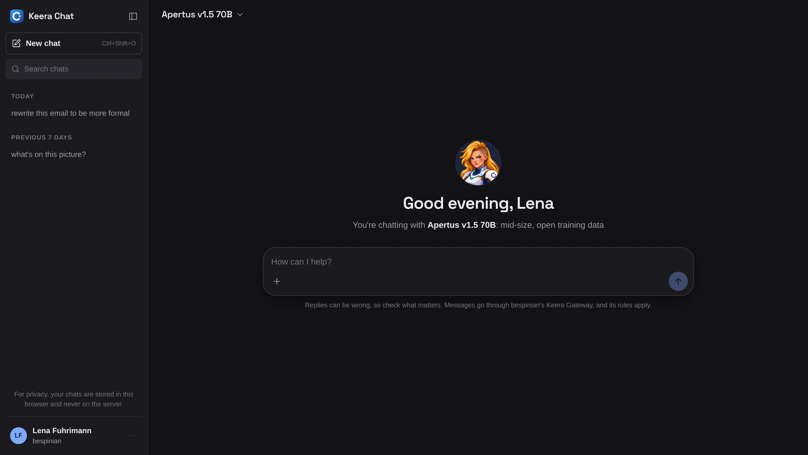

Keera Chat
Private AI chat, under your rules
Keera Chat is the AI assistant in the browser for everyone in your company. Every message passes through Keera Gateway and follows the same rules as any other request.
How Keera Chat works
Sign in with your Keera account and start chatting. There is nothing to install and no API key to copy. Usage and cost show in the gateway under your name.

What Keera Chat does
Only allowed models
You see only the models your keys allow.
Budget in sight
You see how much of your budget is already spent.
Your chats stay with you
Your chats live only in your browser. The audit log records the request, never its content.
Works as you expect
Markdown, tables, code and images, on your phone too.
How your team gets Keera Chat
On Swiss Cloud, you chat at chat.keera.ch with your gateway account. If you run Keera Gateway yourself, you run Keera Chat next to it. Its source is there to read on GitHub (Keera Community Licence).
To chat, a person needs a key that allows a chat model. An administrator issues it in the gateway.
How to use and run Keera Chat is in the documentation.
Questions about Keera Chat
What teams ask us before they open Keera Chat to everyone.
Does Keera Chat store my chats?
Only in your browser. Neither the prompt nor the answer is stored on a server or used for training. Keera Gateway keeps only the request: who, when, which model, how many tokens, which decision - in your company's audit log.
Which models can I use in Keera Chat?
The ones your key allows. Administrators choose them in Keera Gateway, per team and data class, from the models in the model catalogue.
What does Keera Chat cost?
Keera Chat is part of Keera Gateway and costs nothing extra. You pay for model usage, as with any other request through the gateway, and it counts against your budget.